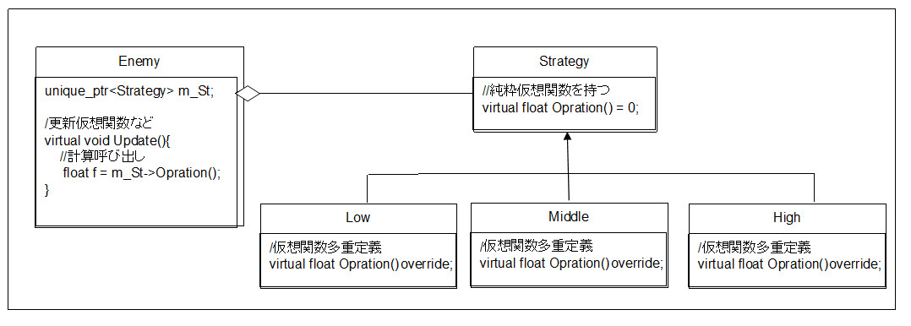

図5002a
まず、Strategyを親としたクラス階層を記述します。ここにはたとえばOperation()という純粋仮想関数を設けます。
float f = m_St->Operation();
図5002b
コントローラのA、B、X、Yボタンを押すと、物体がジャンプします。両方ともジャンプしますが、トーラスの方は合わせて回転します。
//--------------------------------------------------------------------------------------
// class JumpBase;
// 用途: ジャンプのアルゴリズムのベースクラス
//--------------------------------------------------------------------------------------
class JumpBase{
protected:
JumpBase(){}
public:
virtual ~JumpBase(){}
virtual float JumpMethod() = 0;
};
//--------------------------------------------------------------------------------------
// class JumpShort : public JumpBase;
// 用途: 短いジャンプ
//--------------------------------------------------------------------------------------
class JumpShort : public JumpBase{
public:
JumpShort() :JumpBase(){}
virtual ~JumpShort(){}
virtual float JumpMethod()override{
return 2.0f;
}
};
//--------------------------------------------------------------------------------------
// class Box : public GameObject;
// 用途: ボックス
//--------------------------------------------------------------------------------------
class Box : public GameObject{
//中略
unique_ptr<JumpBase> m_JumpStrategy;
public:
//中略
};
//更新
void Box::Update(){
//コントローラの取得
auto CntlVec = App::GetApp()->GetInputDevice().GetControlerVec();
if (CntlVec[0].bConnected){
auto PtrGravity = GetComponent<Gravity>();
if (PtrGravity->GetGravityVelocity().Length() <= 0){
//地面にいるときのみジャンプできる
//Aボタンが押された瞬間なら小ジャンプ
if (CntlVec[0].wPressedButtons & XINPUT_GAMEPAD_A){
m_JumpStrategy.reset(new JumpShort());
PtrGravity->StartJump(0, m_JumpStrategy->JumpMethod(), 0);
}
//Bボタンが押された瞬間なら中ジャンプ
else if (CntlVec[0].wPressedButtons & XINPUT_GAMEPAD_B){
m_JumpStrategy.reset(new JumpMiddle());
PtrGravity->StartJump(0, m_JumpStrategy->JumpMethod(), 0);
}
//Yボタンが押された瞬間なら大ジャンプ
else if (CntlVec[0].wPressedButtons & XINPUT_GAMEPAD_Y){
m_JumpStrategy.reset(new JumpLong());
PtrGravity->StartJump(0, m_JumpStrategy->JumpMethod(), 0);
}
//Xボタンが押された瞬間なら大大ジャンプ
else if (CntlVec[0].wPressedButtons & XINPUT_GAMEPAD_X){
m_JumpStrategy.reset(new JumpLongLong());
PtrGravity->StartJump(0, m_JumpStrategy->JumpMethod(), 0);
}
}
}
}